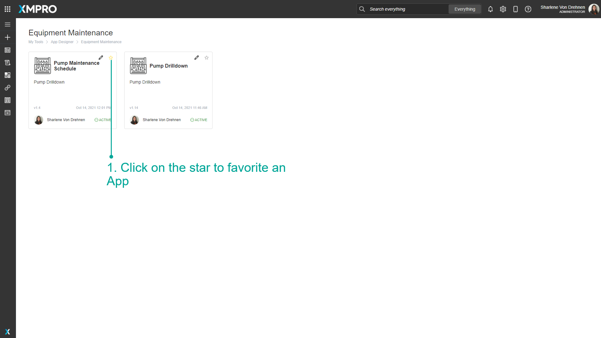
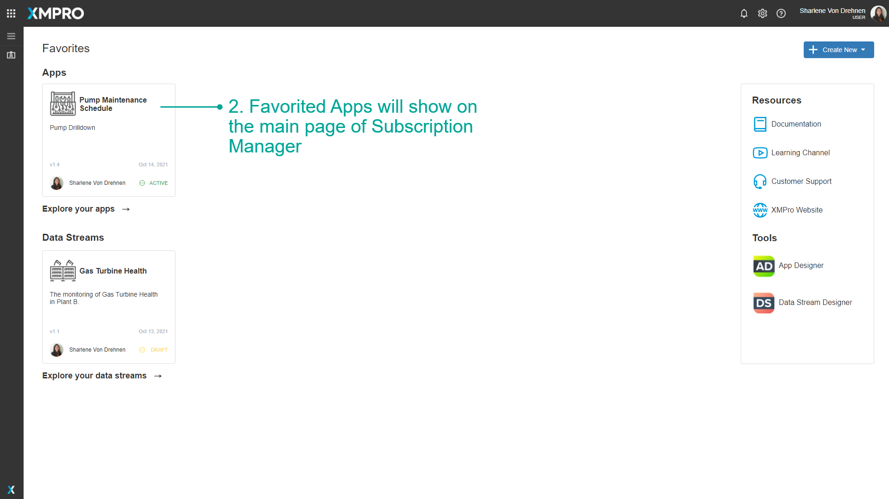
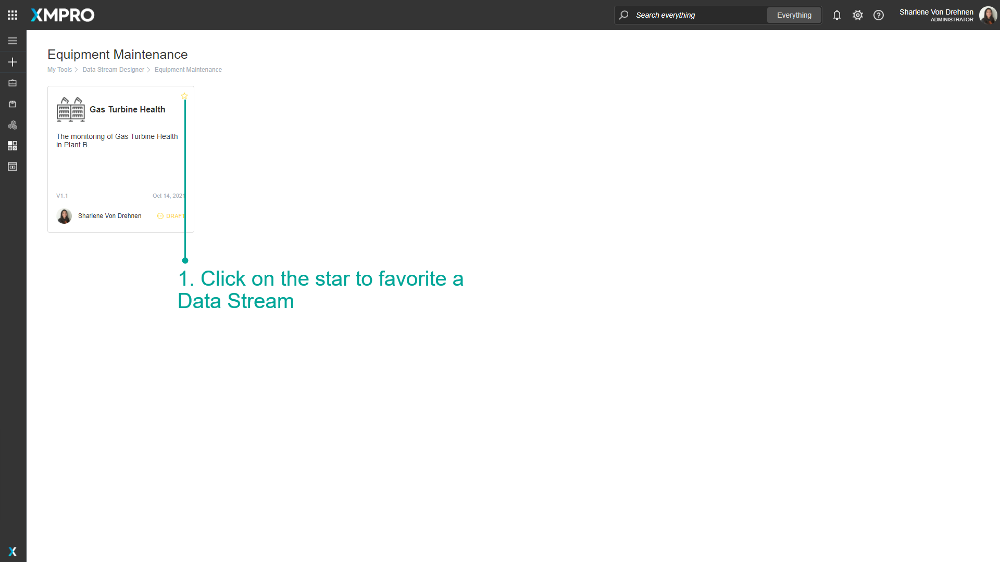
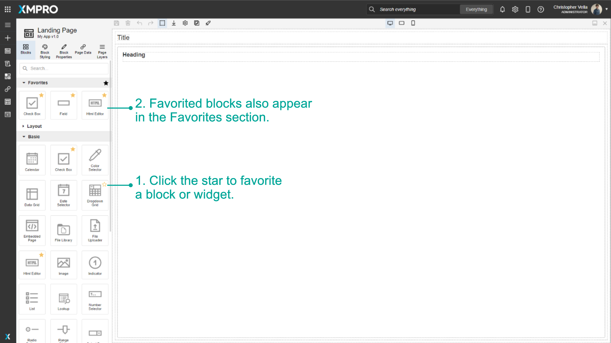
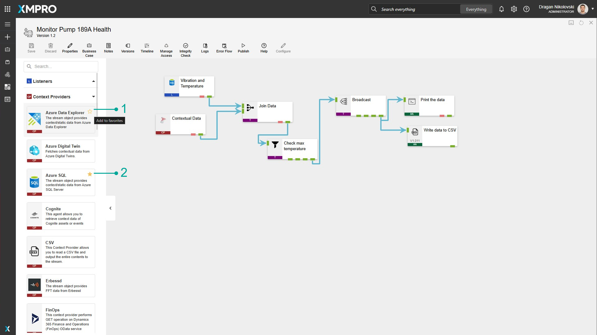

Manage Landing Pages & Favorites
In App Designer, the Landing Page can be set for what Application Landing Page all users in the company will see when they first open App Designer.
Apps and Data Streams can be favorited for fast access in future from Subscription Manager.
Favorite commonly used Blocks for fast access when building Apps in App Designer.
Note
It is recommended that you read the article listed below to improve your understanding of Applications.
Set a Landing Page
To set the Company's Landing Page for either Mobile or Desktop, follow the steps below:
- Click on Settings
- Select from the list of available Applications.
- Click on Save.
Note
You can only select Applications that are already published.

Favorite an App
To Favorite Apps, follow the steps below:
- Click on the star to favorite an App.
- Go to Subscription manager. Favorited Apps will show on the main page of Subscription Manager.
Note
Apps can only be favorited using the category tiles list.


Favorite a Data Stream
To Favorite Data Streams, follow the steps below:
- Click on the star to favorite a Data Stream.
- Go to Subscription manager. Favorited Data Streams will show on the main page of Subscription Manager.
Note
Data Streams can only be favorited using the category tiles list.


Favorite a Block
Added in v4.4.11
To Favorite a Block, including Widgets, follow the steps below.
- Click on the star to favorite a Block (hover over the block to reveal the star).
- Go to the Favorites category. Favorited blocks will appear under Favorites section as well as their original section.

Favorite an Agent
Added in v4.4.17
To Favorite an Agent, follow the steps below.
- Click on the star to favorite an Agent (hover over the block to reveal the star).
- A solid star is the visual indicator for favorited Agents.

Last modified: May 29, 2025